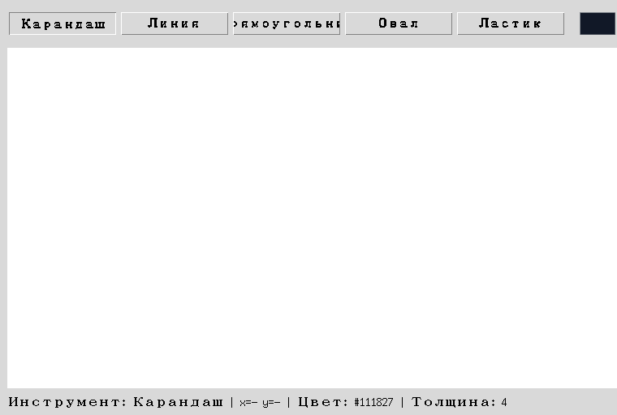
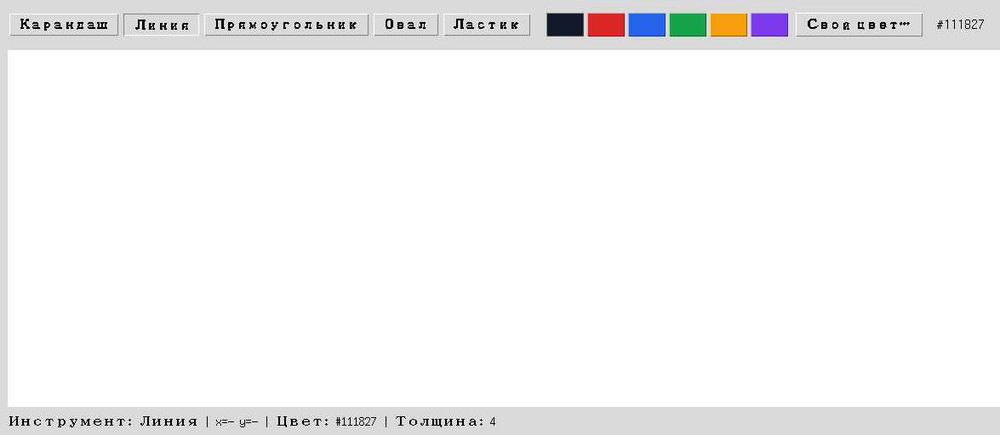

Состояние рисования
Инструмент, цвет, толщина и точка начала жеста — параметры, а не сами фигуры.
Что должна помнить программа между событиями
Три переменные из раздела 18.3 (tekuschaya_figura,
tekuschij_cvet, tolschina) —
честный прототип, но по мере роста приложения к ним добавляются точка начала жеста,
последняя точка карандаша, id черновой фигуры превью — и глобальных переменных становится
слишком много, чтобы держать их связь в голове.
Новое: Enum — заранее известный список вариантов
Пока инструмент хранится строкой, любое слово выглядит допустимым:
"pryamougolnik", "pryamougolnick",
"квадрат". Python не возражает — он и не знает, какие варианты вы
считаете правильными. Опечатка всплывёт гораздо позже и совсем не там: значение просто не
совпадёт ни с одной веткой if, и нажатие мыши тихо перестанет
что-либо рисовать.
Но у инструмента конечное, заранее известное число вариантов — карандаш, линия,
прямоугольник, овал, ластик. Для таких случаев в Python есть перечисление
(Enum из модуля enum): вы один раз
выписываете все допустимые значения, и дальше пользуетесь только ими.
from enum import Enum
class Tool(Enum):
PENCIL = "pencil"
LINE = "line"
RECTANGLE = "rectangle"
print(Tool.RECTANGLE) # Tool.RECTANGLE
print(Tool.RECTANGLE.value) # rectangle
print(Tool.RECTANGLE is Tool.PENCIL) # False
print(Tool.RECTANGL) # AttributeError — опечатка видна СРАЗУТри вещи, которые стоит запомнить про Enum:
Tool.RECTANGLE— это член перечисления, отдельное значение, а не строка. Его удобно передавать и хранить;.valueдостаёт строку, которую вы за ним закрепили — она пригодится, когда фигуру нужно будет записать в JSON (раздел 18.30);- члены сравнивают через
is, а не==: член перечисления существует ровно в одном экземпляре, поэтомуtool is Tool.ERASER— самая точная и быстрая проверка.
Главное отличие от строки: Tool.RECTANGL — это
AttributeError при первом же обращении, а
"pryamougolnick" — совершенно «нормальная» строка, о которой
Python промолчит.
Собираем DrawingState
Теперь соберём оба инструмента вместе: Enum для инструмента и
@dataclass (раздел 14.23) для самого объекта состояния —
он избавляет от рукописного __init__ и сразу даёт понятный
repr:
from dataclasses import dataclass
from enum import Enum
class Tool(Enum):
PENCIL = "pencil"
LINE = "line"
RECTANGLE = "rectangle"
OVAL = "oval"
ERASER = "eraser"
@dataclass
class DrawingState:
tool: Tool = Tool.PENCIL
color: str = "#111827"
width: int = 4
start_x: float | None = None
start_y: float | None = Nonetekuschaya_figura = "pryamougolnik" работает, но опечатку в строке Python не заметит, пока код не выполнится и фигура тихо не окажется «неизвестной». Tool.RECTANGLE — то же самое по смыслу, но опечатку поймает уже редактор или python -c "import module". Enum здесь оправдан ровно потому, что вариантов инструмента конечное известное число. Если вариант всего один или их список постоянно меняется — обычной строки достаточно, перечисление только добавит церемоний.

set_tool() одновременно меняет self.state.tool И relief нужной кнопки — та же связка «модель → отражение на экране», что и render() в главе 17.